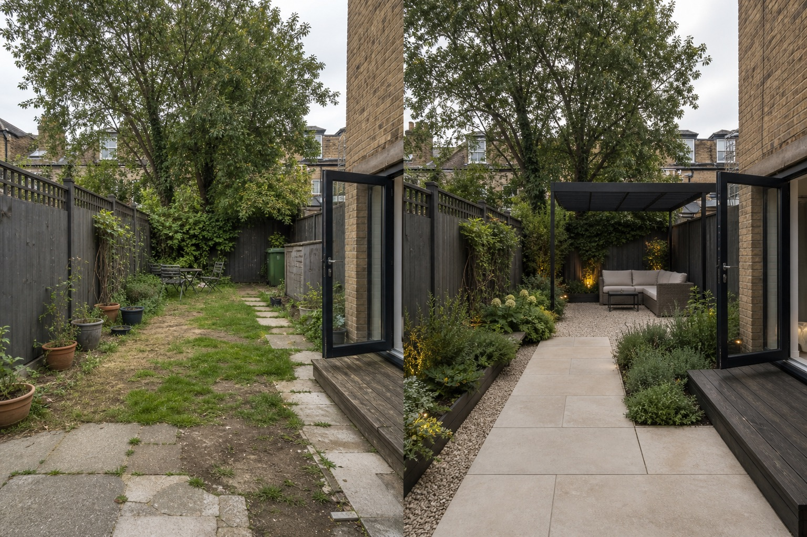

Draw the primary route first
Connect the house, gate, storage, utilities, and main sitting area before placing beds. Keep secondary routes visually quieter so movement reads immediately.
A useful modern garden has a hierarchy: one primary route, one main destination, a limited material family, and deliberate responses to water, sun, access, and upkeep.
Editorially reviewed July 21, 2026.
This AI-generated comparison explores layout and mood. It is not a measured plan, planting specification, construction detail, or performance guarantee.

Connect the house, gate, storage, utilities, and main sitting area before placing beds. Keep secondary routes visually quieter so movement reads immediately.
Choose the main purpose—dining, a quiet seat, play, or planting—and give that destination the clearest geometry instead of making every zone compete.
Repeat compatible surfaces. Compare weathering, cleaning, glare, heat, drainage, slip resistance, and repair access before choosing paving, metal, timber, or gravel.
A concept may hide drainage falls, heat gain, glare, slippery areas, stains, awkward cuts, or inaccessible services. Test hierarchy visually, but use measured site information and qualified local advice for levels, structure, materials, planting, and approvals.
Record boundaries, thresholds, slopes, drains, roots, utilities, access, and structures. Never infer dimensions from an image.
Observe runoff, low points, seasonal sun, wind, reflected light, and surface temperature; changes to levels need local review.
Keep gates, bins, taps, drains, meters, furniture routes, planting, and repairs reachable; compare cleaning, pruning, and replacement needs.
Check permissions, boundaries, utilities, accessibility, slip risks, climate, mature size, invasive status, and pet or child safety with qualified local sources.
Clear hierarchy, repeated geometry, a limited material palette, and deliberate planting masses. The layout must still respond to access, water, climate, safety, and maintenance.
No. Modern character can come from proportion, alignment, repetition, and restraint. Use only the hard surface needed, then evaluate drainage, heat, glare, cleaning, and local requirements.
No. AI can compare mood, zoning, and material relationships, but cannot verify measurements, drainage, utilities, structure, product performance, plant suitability, permits, safety, cost, or workmanship.
Upload a photo to compare layout directions before choosing plants or materials.
AI-generated visualizations are concepts. Check local conditions and consult a qualified professional before construction or planting.